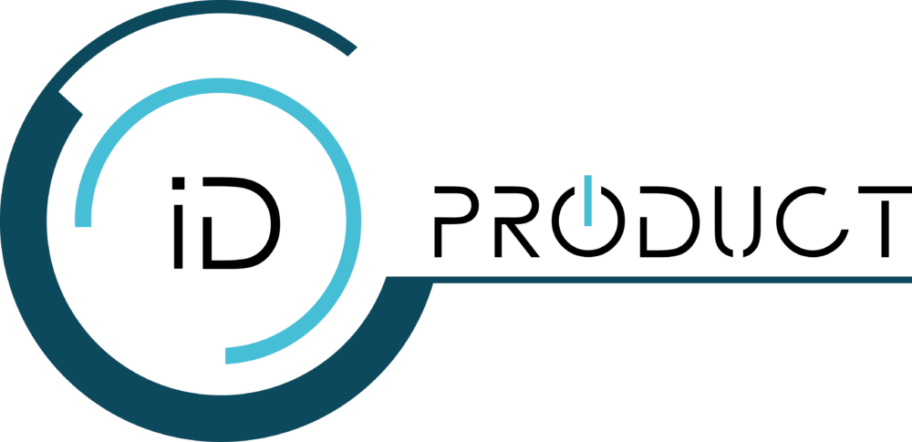

<mat-sidenav-container fullscreen>
    <mat-sidenav #sidenav mode="side">
        
        <mat-list no-padding (click)="sidenav.close()" class="sidebar cursorpointer">
            <mat-list-item no-padding class="menuicon" routerLink="/" class="top-space">
                HOME
            </mat-list-item>
            <mat-list-item no-padding class="menus" [routerLink]="[trash]">
                TRASH
            </mat-list-item>
        </mat-list>
    </mat-sidenav>

    <mat-toolbar>
        <mat-icon *ngIf="isShowMenuIcon" (click)="sidenav.toggle()" class="menuicon cursorpointer">menu</mat-icon>
        <mat-icon *ngIf="!isShowMenuIcon" (click)="goBack()" class="menuicon">arrow_back_ios</mat-icon>
    </mat-toolbar>

    <router-outlet></router-outlet>
    <footer class="text-light">
        <div class="container">
            <div class="row">
                <div class="col-md-3 col-lg-4 col-xl-3">
                    <h5 class="footer-links">Links</h5>
                    <hr class="bg-white mb-3 mt-0 d-inline-block mx-auto w-25">
                    <p class="mb-2"> <a routerLink="/">Home</a> </p>
                    <p class="mb-0"> <a [routerLink]="[trash]">Trash</a> </p>
                </div>
            </div>
        </div>
    </footer>
</mat-sidenav-container>